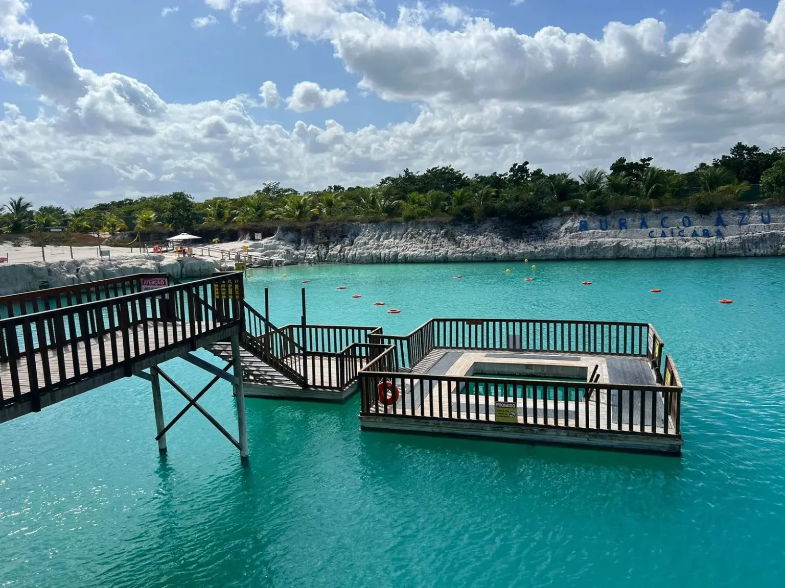
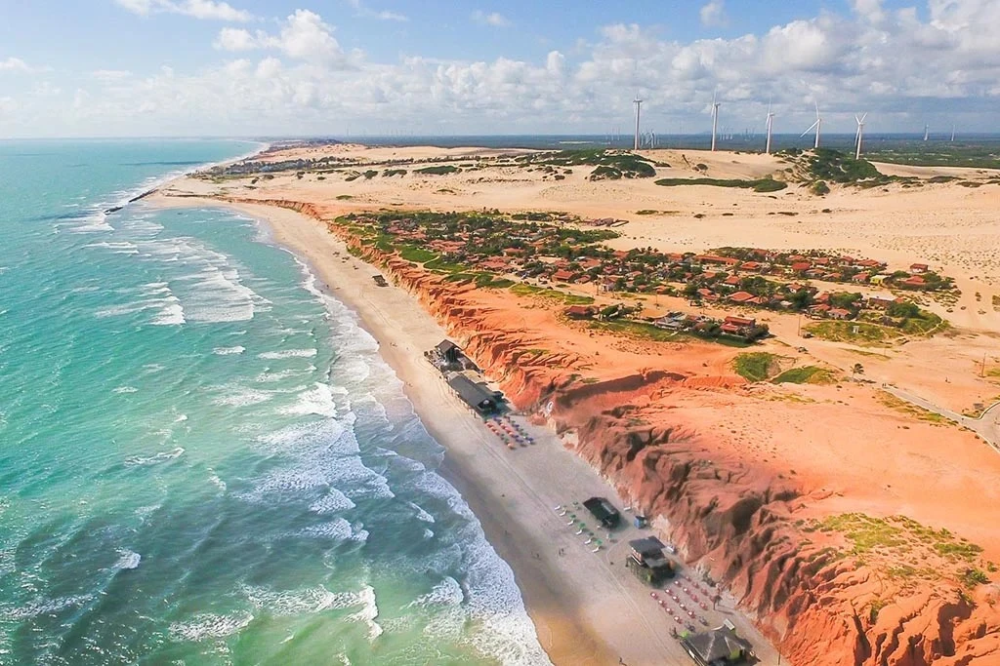
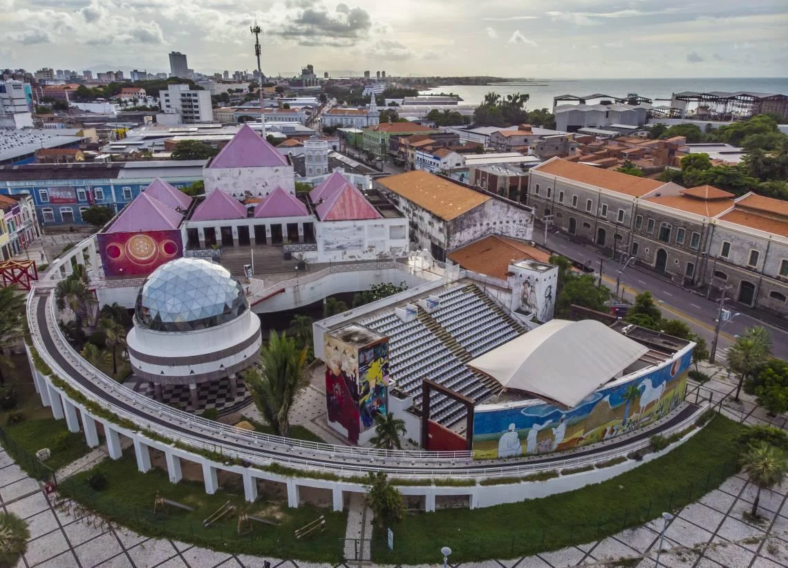
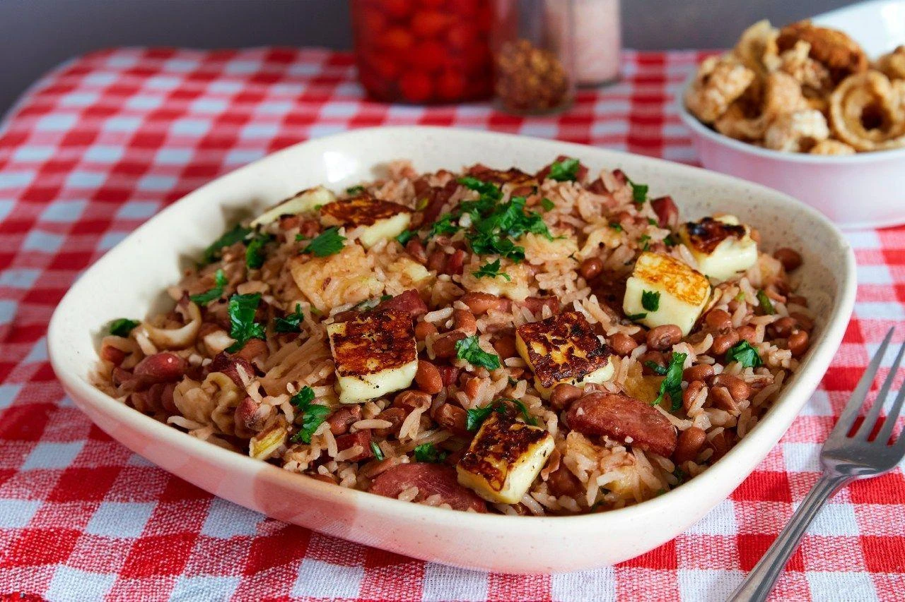
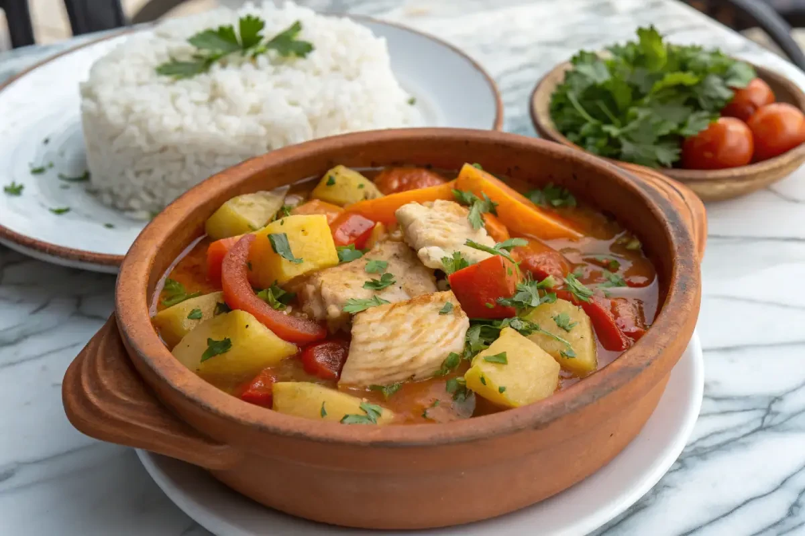
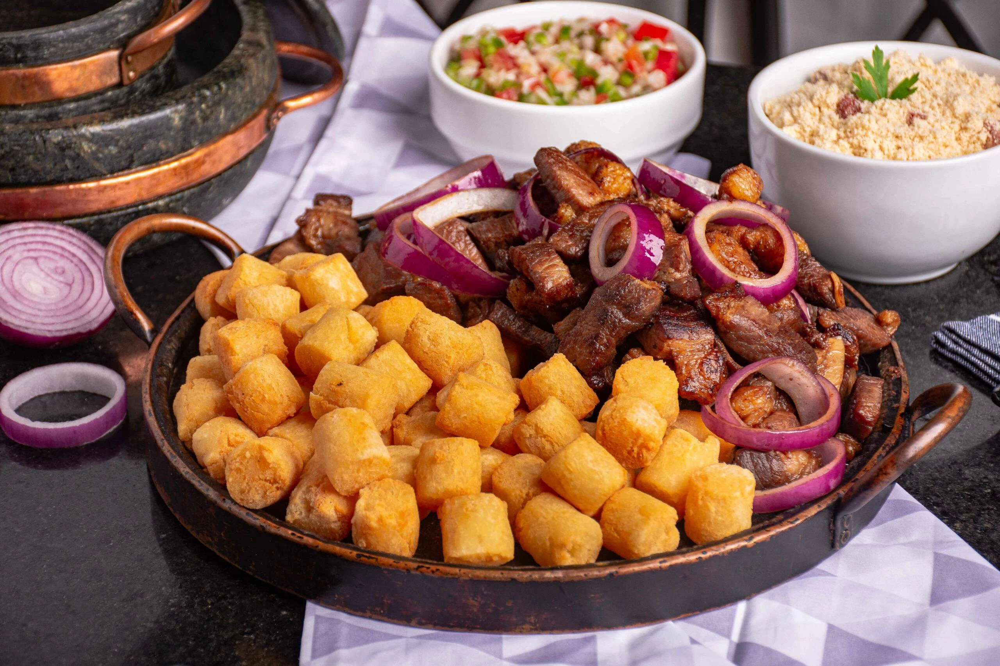

Capital
Fortaleza
Conheça destinos, culturas, sabores e paisagens de todas as regiões
brasileiras.
Destinos, culturas e paisagens
incríveis te esperam.
O Ceará é um estado localizado na Região Nordeste do Brasil, conhecido por suas belas praias, dunas, falésias e forte tradição cultural. Com um dos litorais mais famosos do país, o estado atrai turistas em busca de sol, mar e esportes aquáticos. Além das atrações naturais, o Ceará destaca-se pela hospitalidade de seu povo, pela rica gastronomia e por manifestações culturais que fazem parte da identidade nordestina.

Fortaleza
Aproximadamente 148.894 km²
Cerca de 9,2 milhões de habitantes
Nordeste

Jericoacoara é um dos destinos turísticos mais famosos do Brasil. Conhecida por suas dunas, lagoas e praias paradisíacas, oferece paisagens espetaculares e um ambiente ideal para relaxar e praticar esportes aquáticos.

Canoa Quebrada é famosa por suas falésias avermelhadas, praias extensas e vida noturna animada. É um dos cartões-postais mais conhecidos do Ceará.

O Centro Dragão do Mar de Arte e Cultura é um importante espaço cultural que reúne museus, cinemas, teatros e exposições, promovendo a arte e a cultura cearense.

O Baião de Dois é um dos pratos mais tradicionais do Ceará. Feito com arroz, feijão, queijo coalho e carne, representa bem a culinária regional.

Prato preparado com peixe cozido, legumes e temperos regionais. É bastante apreciado no litoral cearense e destaca os sabores locais.

Uma das receitas mais populares do Nordeste, combina carne de sol com macaxeira cozida ou frita, resultando em um prato saboroso e tradicional.
O Ceará possui clima quente durante praticamente todo o ano, com muitas horas de sol e temperaturas elevadas.
O Ceará possui clima quente durante praticamente todo o ano, com muitas horas de sol e temperaturas elevadas.
O litoral oeste, onde está Jericoacoara, e o litoral leste, onde fica Canoa Quebrada, concentram algumas das paisagens mais bonitas do estado. Fortaleza também merece visita por suas atrações urbanas e culturais.
O litoral oeste, onde está Jericoacoara, e o litoral leste, onde fica Canoa Quebrada, concentram algumas das paisagens mais bonitas do estado. Fortaleza também merece visita por suas atrações urbanas e culturais.
A culinária cearense valoriza frutos do mar, carne de sol, macaxeira e queijo coalho. Experimentar pratos típicos é uma excelente forma de conhecer a cultura local.
A culinária cearense valoriza frutos do mar, carne de sol, macaxeira e queijo coalho. Experimentar pratos típicos é uma excelente forma de conhecer a cultura local.